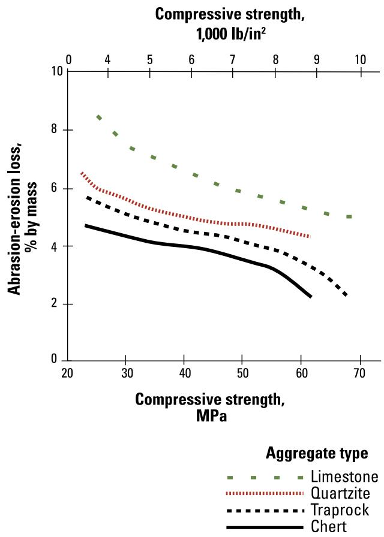

Recycled Aggregate Pavement Sustainability
Recycled Aggregate Pavement Sustainability is a material‑selection approach applied during project design or scoping that evaluates whether reclaimed aggregates—such as recycled asphalt pavement, recycled concrete aggregate, air‑cooled blast‑furnace slag, or locally sourced marginal material—can replace virgin aggregates in cement‑treated bases, subbases, base or concrete layers[2][3]. The approach mandates a rigorous engineering evaluation of the source material’s quality (compressive strength, abrasion resistance, reactivity, cleanliness) and the adjustment of mix proportions, supported by laboratory testing, to meet required gradation, strength, workability and durability while lowering haul distances, fuel consumption, emissions and overall life‑cycle environmental impact[1][4]. Success is achieved when the pavement satisfies all structural and durability specifications at a reduced environmental and social cost over its service life[2][4].
Sources (4)
Purpose and decision context
The guides use Recycled Aggregate Pavement Sustainability to steer the material‑selection decision made during project design or scoping: whether recycled or reclaimed aggregates—such as in‑situ marginal material, recycled asphalt pavement, reclaimed concrete, air‑cooled blast furnace slag, or other industrial by‑products—should replace virgin aggregates in a cement‑treated base, subbase, base, or concrete layer. The decision requires evaluating the source material’s quality (e.g., compressive strength, abrasion resistance, potential distress), matching those characteristics to the performance requirements of the intended pavement layer, and adjusting mix proportions—including supplementary cementitious materials when needed—to achieve required gradation, strength, workability and durability. Laboratory testing confirms that the designed mixes meet setting‑time and strength criteria, ensuring durable pavements while delivering lower hauling distances, reduced fuel consumption and emissions, and a smaller life‑cycle environmental footprint at cost‑effective levels. [2][3][4]
[2] — Materials (p. 71), Solution (p. 70), Sustainability (p. 60); [3] — Ch. 3 (p. 32); [4] — Ch. 1 (pp. 21–42), Ch. 11 (pp. 108–109)
Recycled‑aggregate pavement sustainability tackles the fundamental problem that “Aggregates make up the largest share of the mass and volume in a concrete pavement structure,” creating significant energy use, greenhouse‑gas emissions, and waste from virgin material extraction and transport. By substituting reclaimed asphalt, recycled concrete aggregate, air‑cooled blast furnace slag, or other industrial by‑products for virgin aggregates, designers can meet the strength and durability needs of bases, subbases, and concrete layers while reducing environmental impact. The approach also satisfies a clear need to lessen reliance on newly quarried granular resources; “In-situ or local marginal aggregates can be used in CTB. This will minimize the need to haul in costly select granular aggregates,” thereby cutting truck trips, fuel consumption, and associated emissions. Because recycled aggregates may differ in physical and chemical properties, the performance goal requires rigorous material assessment: “Prior to deciding to recycle concrete from existing infrastructure, a level of knowledge of the characteristics and quality of source material should be obtained.” Ultimately, mix designs must be engineered to preserve load‑carrying capacity, avoid durability issues such as alkali‑silica reaction or delayed cracking, and achieve all required performance criteria at the lowest environmental and social cost over the pavement’s service life. “The goal of mix proportioning is to find the combinations of available and specified materials that will ensure that a mixture is cost effective, meets all required performance requirements, and does this at the lowest environmental and social cost over the life cycle.” [1][2][3][4]
[1] — Ch. 2 (p. 38); [2] — Considerations (p. 70), Materials (p. 71), Sustainability (p. 60); [3] — Ch. 3 (p. 32); [4] — Ch. 1 (pp. 21–42), Ch. 11 (pp. 108–109)
Scope and applicability
Recycled aggregate pavement approaches are appropriate for any project that requires aggregates—whether for unbound base or sub‑base layers, asphalt pavements, or concrete paving—including the lower lift of a two‑lift concrete placement. Recycled‑aggregate pavement is appropriate for projects that construct or rehabilitate a cement‑treated base (CTB) in new road construction, reconstruction of existing concrete pavements, or addition of new surface layers when reclaimed concrete or locally sourced marginal aggregates are available. Recycled aggregate pavement sustainability is appropriate when a project can draw concrete from existing agency‑owned infrastructure or other known sources and the material characteristics can be verified to meet the requirements of the intended pavement layer; this includes reconstruction, rehabilitation, or new PCCP work where the source concrete is clean. Recycled aggregate pavement is appropriate for projects that involve constructing or rehabilitating pavements where the subbase or base layers can incorporate recycled concrete, construction waste, or industrial by‑product aggregates, especially when in‑situ crushing can be used to limit transport and landfill disposal. In addition, the approach suits assets that need a stronger base than unbound material and those showing distress such as alkali‑silica reaction or D‑cracking, provided mix designs incorporate necessary binder adjustments and quality controls. The decision to use recycled aggregates is made during scoping, design, procurement, and construction phases, with laboratory proportioning, testing, and quality‑control plans established before implementation. [1][2][3][4]
The following figure illustrates a typical off-site concrete pavement recycling operation.
 Typical off-site concrete pavement recycling operation [3]
Typical off-site concrete pavement recycling operation [3]
The image displays a mobile crushing plant and an excavator processing material on a paved surface, illustrating the physical implementation of in-situ or near-source aggregate production.
[1] — Ch. 2 (p. 38); [2] — Materials (p. 71), Solution (p. 70), Sustainability (p. 60); [3] — Ch. 3 (p. 32); [4] — Ch. 1 (p. 42)
The guides concur that recycled‑aggregate pavement is inappropriate when an engineering evaluation demonstrates that the reclaimed material would impair fresh or hardened concrete performance, and they require "A proper engineering evaluation must be done when using these materials in concrete paving mixtures to ensure that their properties do not negatively impact the fresh or hardened properties of the concrete." Additionally, if the required haul distance results in higher energy use and greenhouse‑gas emissions than virgin‑aggregate mining—"The energy use and GHG emissions from transport can be larger than those from mining and processing, especially if trucks are used instead of more fuel‑efficient transportation modes, such as rail or barges"—a conventional aggregate should be selected.
Across the sources, several material‑specific deficiencies also preclude recycling. When the reclaimed concrete contains alkali‑reactive or D‑cracking‑prone aggregates, "recycled concrete containing alkali‑reactive aggregates or aggregates prone to D‑cracking may not be advisable for use in paving concrete unless mitigated", and "If ASR or D-cracking exists in recycled pavement material, special attention must be given to mixture design." High absorption, porosity, and lower strength are flagged: "Concrete pavements containing RCA can result in increased porosity and absorption, higher coefficient of thermal expansion and shrinkage, lower strengths, and reduced specific gravity when compared to the use of only virgin aggregates." When chloride content is a concern for reinforced concrete, "The chloride content of recycled aggregates should be investigated if the material will be used in reinforced concrete."
The guides also note that durability‑related properties can render recycling unsuitable. Abrasion susceptibility demands altered construction methods: "Recycled concrete aggregates can be more susceptible to abrasion." and when such aggregates are intended for unbound base or sub‑base layers, additional handling adjustments are required. If the source material cannot be verified as having adequate strength, abrasion resistance, low reactivity, or is contaminated, "Prior to deciding to recycle concrete from existing infrastructure, a level of knowledge of the characteristics and quality of source material should be obtained." and "In almost every paving application, the source concrete should be ‘clean’ (i.e., free of significant amounts of undesirable material that could impact the quality of the end‑product)."
Finally, certain industrial by‑products are excluded. Extreme instability in steel‑furnace slag is warned against: "Extreme caution must be exercised if other sources of slag (e.g., steel furnace) are being considered for use, as cases of extreme instability and volume change have been reported in some instances, which will lead to rapid pavement failure." In such cases a different approach—using virgin aggregate or a more stable by‑product with proper mix design and testing—is recommended. [1][2][3][4]
[1] — Ch. 2 (p. 38); [2] — Considerations (p. 70), Materials (p. 71); [3] — Ch. 3 (p. 32); [4] — Ch. 1 (p. 42)
Information needs
A proper engineering evaluation must be done when using these materials in concrete paving mixtures to ensure that their properties do not negatively impact the fresh or hardened properties of the concrete. Transportation-related impacts primarily involve the burning of fossil fuel in trucks. The energy use and GHG emissions from transport can be larger than those from mining and processing, especially if trucks are used instead of more fuel‑efficient transportation modes, such as rail or barges. Cement-treated base provides a stronger base than unbound granular material; therefore, for the same load‑carrying capacity, less material is required. Stakeholder acceptance of using reclaimed or industrial by‑product materials rounds out the information set required for a sustainable implementation. [1][2][3][4]
The following figure illustrates specific features of concrete pavements that can be leveraged to enhance overall sustainability.
 Features of concrete pavements that can enhance sustainability (from Wathne 2008) [4]
Features of concrete pavements that can enhance sustainability (from Wathne 2008) [4]
The figure displays a cutaway diagram of a pavement structure with labels pointing to various features such as “Industrial By-Product Use” and “Renewal and Recycling.” It illustrates how material acquisition from byproducts and the use of renewable resources contribute to a lower energy footprint and improved fuel economy. The diagram visually connects the use of these materials to broader sustainability goals like improved stormwater quality, long-lived performance, and low fuel consumption during construction.
[1] — Ch. 2 (p. 38); [2] — Considerations (p. 70), Materials (p. 71), Sustainability (p. 60); [3] — Ch. 3 (p. 32); [4] — Ch. 1 (p. 42)
Information used to assess recycled‑aggregate pavement sustainability must be accurate enough to reflect the true characteristics and quality of the source concrete, current in that it is based on recent testing or verification of those properties, and complete by covering all key material attributes such as compressive strength, abrasion resistance, susceptibility to distress (e.g., alkali‑aggregate reactivity), and cleanliness. The agency should obtain this knowledge before deciding to recycle, align specifications with the identified characteristics, and apply additional QA/QC measures where required. [3]
[3] — Ch. 3 (p. 32)
Alternatives
The feasible options that should be compared when evaluating recycled‑aggregate pavement sustainability fall into several complementary groups: - Reclaimed asphalt pavement (RAP) used directly or blended with cement to form a cement‑treated base (CTB). - Recycled concrete aggregate (RCA)—old concrete crushed for use in subbase, base, or paving layers. - Air‑cooled blast furnace slag (ACBFS) employed as a partial substitute for conventional aggregates. - In‑situ or locally sourced marginal aggregates applied in CTB, contrasted with imported granular aggregates. - Cement‑treated base versus unbound granular material, recognizing that the former provides higher strength and therefore requires less thickness and material. - Reduction of cement content by lowering clinker proportion or incorporating supplementary cementitious materials. - Modification of aggregate gradation toward larger nominal maximum sizes to decrease the amount of cementitious binder needed. Each alternative is examined against a natural‑aggregate baseline, with comparison criteria that include fresh and hardened concrete performance, structural strength, required layer thickness, material quantity, transportation energy, fuel consumption, greenhouse‑gas emissions, landfill diversion, embodied energy, service life, durability thresholds (e.g., stiffness, cracking resistance), and overall carbon footprint. [1][2][4]
[1] — Ch. 2 (p. 38); [2] — Solution (p. 70), Sustainability (p. 60); [4] — Ch. 1 (p. 42), Ch. 11 (pp. 108–109)
Decision criteria
Across the guides, the decision to use recycled‑aggregate pavement must first satisfy core performance requirements—adequate compressive strength, abrasion resistance, durability and material cleanliness—before any other factor can be considered. Two of the sources place sustainability at the top of the hierarchy, emphasizing that locally sourced marginal aggregates or industrial by‑products cut haul distances, fuel consumption, emissions and overall life‑cycle energy use, thereby reducing environmental impact and future maintenance needs. The third source stresses that performance criteria are the primary gatekeeper for recycled concrete aggregate, requiring knowledge of source material characteristics and matching quality to the intended application. Cost and schedule appear as secondary supports; lower hauling costs and reduced reliance on select granular aggregates are noted benefits, but they do not outweigh the need for adequate structural performance. [2][3][4]
[2] — Sustainability (p. 60); [3] — Ch. 3 (p. 32); [4] — Ch. 1 (pp. 21–42), Ch. 11 (pp. 108–109)
When balancing criteria for recycled‑aggregate pavement sustainability, the primary priority is to meet all required performance specifications while minimizing life‑cycle environmental impacts such as embodied energy and greenhouse‑gas emissions; cost effectiveness follows closely. Mix design should therefore first ensure durability and structural adequacy, then seek to reduce cement content by using larger aggregate sizes, incorporating recycled concrete aggregates, supplementary cementitious materials, and chemical admixtures that allow lower cement dosages, all aimed at achieving the lowest overall environmental and social cost over the pavement’s service life. [4]
[4] — Ch. 11 (pp. 108–109)
Analysis methods and tools
The sustainability assessments for pavement that incorporates recycled aggregates rest on several shared assumptions. First, it is assumed that a thorough engineering evaluation will confirm that the reclaimed material—whether RAP, RCA, or air‑cooled blast‑furnace slag—can be matched to the performance requirements of the intended layer and will not degrade fresh‑ or hardened‑concrete properties. Second, the analyses presume that enough clean recycled concrete is available to substitute virgin aggregate and that appropriate mix proportioning, supported by laboratory testing of setting time, strength, and workability, can achieve comparable durability and life‑cycle environmental targets. Third, it is assumed that any known sources of distress in the original material (e.g., alkali‑reactive aggregates or D‑cracking‑prone constituents) can be mitigated through design controls such as supplemental fly ash, slag cement, reduced water‑cement ratios, or additional binder content. Fourth, transportation impacts are taken as a dominant environmental burden, with emissions estimated based on assumed transport modes and distances.
Uncertainties that influence the results arise primarily from the inherent variability of recycled aggregates. The amount of unhydrated cement, porosity, absorption, thermal expansion, shrinkage, strength, and specific gravity can differ widely between batches, making it difficult to predict stiffness, binder demand, or required admixture dosages. Unknown transport distances and modal mixes further cloud estimates of energy use and greenhouse‑gas emissions. When the source material is of uncertain quality—especially if obtained from non‑agency projects—additional testing for compressive strength, abrasion resistance, and susceptibility to alkali‑silica reaction or delayed ettringite cracking becomes necessary, introducing extra QA/QC steps that may force deviations from standard mix specifications. The presence of chlorides in recycled aggregates adds another layer of uncertainty for reinforced concrete applications. Finally, the use of alternative slag types carries a risk of unexpected instability or volume change, which can affect durability and the realized embodied‑energy savings under field conditions. [1][2][3][4]
The following figure illustrates how these material properties influence performance by showing the effect of compressive strength and aggregate type on the abrasion resistance of concrete.

Effect of compressive strength and aggregate type on the abrasion resistance of concrete using ASTM C1138 [1]The figure plots abrasion-erosion loss against compressive strength for four distinct aggregate types: limestone, quartzite, traprock, and chert. Abrasion resistance of concrete is related to both aggregate type and concrete compressive strength, with high-strength concrete made with a hard aggregate being highly resistant to abrasion.
[1] — Ch. 2 (p. 38); [2] — Considerations (p. 70), Materials (p. 71); [3] — Ch. 3 (p. 32); [4] — Ch. 1 (p. 42), Ch. 11 (pp. 108–109)
Stakeholders and constraints
Input for using recycled concrete aggregate comes from a thorough assessment of the source material’s properties, which may require laboratory testing to establish compressive strength, abrasion resistance and other relevant characteristics. The agency responsible for the project reviews these data against its aggregate specifications and aligns the requirements with the intended pavement application. Based on that review, the agency makes the decision to permit RCA use and provides final approval, ensuring any necessary adjustments to mixture proportions or QA/QC measures are incorporated. [3]
[3] — Ch. 3 (p. 32)
The choice of recycled‑aggregate pavement is bounded by a set of design, quality‑control and agency specification requirements. A proper engineering evaluation must be done when using these materials in concrete paving mixtures to ensure that their properties do not negatively impact the fresh or hardened properties of the concrete. Several publications provide good guidance concerning the use of these materials (ACPA 2009, Van Dam et al. 2012, Morian et al. 2012, Smith et al. 2012, Brand et al. 2012). Recycled asphalt pavement combined with cement is recognized as an acceptable CTB material, and cement‑treated base provides a stronger base than unbound granular material; therefore, for the same load‑carrying capacity, less material is required. If ASR or D‑cracking exists in recycled pavement material, special attention must be given to mixture design. Recycled concrete aggregates can be processed to exhibit properties that meet the same gradation requirements as virgin aggregates used for similar applications. To achieve the same workability, slump, and w/cm ratio as in conventional concrete, mixtures incorporating RCA typically require higher paste content and/or greater amounts of water reducer. The agency should review the specifications for typical aggregate products in the context of potential use of RCA and align the material requirements with the potential application and source of the RCA. If RCA is to be used for new PCCP applications, additional QA/QC measures are typically implemented. Concrete pavements with alkali‑silica reactivity (ASR) and D‑cracked pavements have been successfully recycled into new concrete pavements, but mitigating provisions (such as the use of fly ash or slag cement and reduced w/cm ratio) are typically incorporated into the new concrete mixture. The mixes have to be proportioned and tested in the lab to ensure that setting times and strengths are satisfactory. Recycled concrete containing alkali‑reactive aggregates or aggregates prone to D‑cracking may not be advisable for use in paving concrete unless mitigated. If ACBFS is used in paving concrete, special design and construction considerations must be followed to ensure acceptable performance. [1][2][3][4]
The following figure illustrates recycled concrete aggregates.
 Recycled concrete aggregates [2]
Recycled concrete aggregates [2]
The image displays a close-up view of a pile of irregular, angular grey stones with rough surfaces.
[1] — Ch. 2 (p. 38); [2] — Considerations (p. 70), Materials (p. 71), Sustainability (p. 60); [3] — Ch. 3 (p. 32); [4] — Ch. 1 (p. 42)
Timing and implementation
The guides agree that the choice to use recycled‑aggregate pavement must be made early in the project lifecycle. It should be taken during the project selection and scoping phase, after the agency has obtained sufficient knowledge of the source concrete’s characteristics (e.g., compressive strength, abrasion resistance) and confirmed that the material meets the specifications for the intended layer. The decision is then reinforced at the design stage, when material selection and mixture proportioning are defined, because those choices set constraints that affect every subsequent life‑cycle phase. [3][4]
The following figure illustrates the concrete pavement life cycle to contextualize these early-stage decisions.
 Concrete pavement life cycle diagram showing the progression from design to reconstruction and recycling. [4]
Concrete pavement life cycle diagram showing the progression from design to reconstruction and recycling. [4]
The figure displays a cyclical process for concrete pavement consisting of six stages: Design, Materials Processing, Construction, Operations, Preservation and Rehabilitation, and Reconstruction and Recycling.
[3] — Ch. 3 (p. 32); [4] — Ch. 1 (pp. 21–22)
Action is triggered when any of the following conditions are identified: (1) ASR or D‑cracking is detected in recycled pavement material, requiring special attention to mixture design; (2) the chloride content of recycled aggregates could affect reinforced‑concrete performance, prompting investigation; (3) incorporation of recycled concrete aggregates into hot‑mix asphalt raises binder content requirements; (4) use of RCA in unbound base or subbase layers demands adjustments to construction handling; (5) a decision to incorporate any recycled aggregate into the concrete mix initiates laboratory proportioning and testing to verify setting times and strength; (6) selection of air‑cooled blast furnace slag as an aggregate activates special design and construction procedures for acceptable performance; and (7) consideration of other slag sources triggers extreme caution and additional stability assessment before approval. In each case, mixture designs must be revisited, paste or binder proportions modified, and extra quality‑control steps applied to maintain workability and achieve target strength. [2][4]
[2] — Considerations (p. 70), Materials (p. 71); [4] — Ch. 1 (p. 42)
Outcomes and follow-up
Success for recycled‑aggregate pavement sustainability is realized when a pavement built with RCA performs as durably as one using virgin aggregates, meeting the same gradation, strength, workability and stability criteria required for its service class. Success is achieved when the recycled concrete aggregate used in a pavement meets the same quality criteria as virgin aggregate for its intended application, which is demonstrated by laboratory testing of compressive strength, abrasion resistance and susceptibility to distress such as alkali‑silica reactivity or D‑cracking. Success is defined by a pavement that not only satisfies all structural, durability and setting‑time requirements but also demonstrably reduces the consumption of virgin resources and associated environmental impacts. Measurement combines verification that processed RCA meets specified gradation limits, comparable slump and water‑to‑cement ratios (or binder content), acceptable porosity, absorption, thermal expansion, shrinkage and strength values throughout construction and service life, a QA/QC program that matches source material to project specifications and records any required mix adjustments, and quantitative metrics that track the percentage of recycled material versus virgin aggregate, avoided haul distances or fuel use, reduction in cement content, and the resulting decrease in life‑cycle greenhouse‑gas emissions or embodied energy. [2][3][4]
The practical application of these sustainability principles is illustrated in the figure below, which depicts an airfield pavement layout at Hartsfield-Jackson Atlanta Airport featuring a recycled concrete aggregate base.
 Airfield pavement layout at Hartsfield-Jackson Atlanta Airport showing features with RCA base [3]
Airfield pavement layout at Hartsfield-Jackson Atlanta Airport showing features with RCA base [3]
The figure displays a schematic map of the airfield infrastructure, identifying specific runways and taxiways that are designated as having an RCA subbase. This visual evidence supports the concept by demonstrating how reclaimed concrete aggregate is applied in a large-scale project to replace virgin aggregates in pavement layers, thereby reducing landfill costs and environmental impact.
[2] — Materials (p. 71); [3] — Ch. 3 (p. 32); [4] — Ch. 1 (p. 42), Ch. 11 (pp. 108–109)
References
- Integrated Materials and Construction Practices for Concrete Pavement: A State-of-the-Practice Manual (2nd edition IMCP Manual, 2019) [link]
- Guide to Cement-Based Integrated Pavement Solutions (2011) [link]
- Recycling Concrete Pavement Materials: A Practitioner’s Reference Guide (2018) [link]
- Sustainable Concrete Pavements: A Manual of Practice (2012) [link]